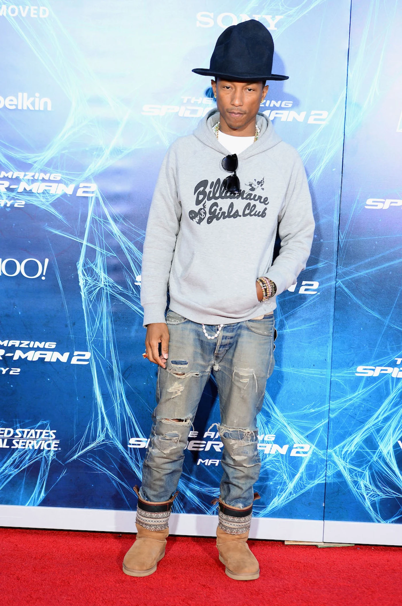
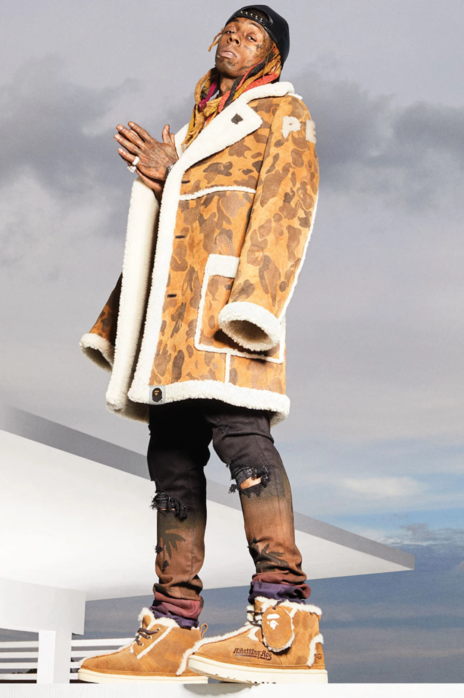
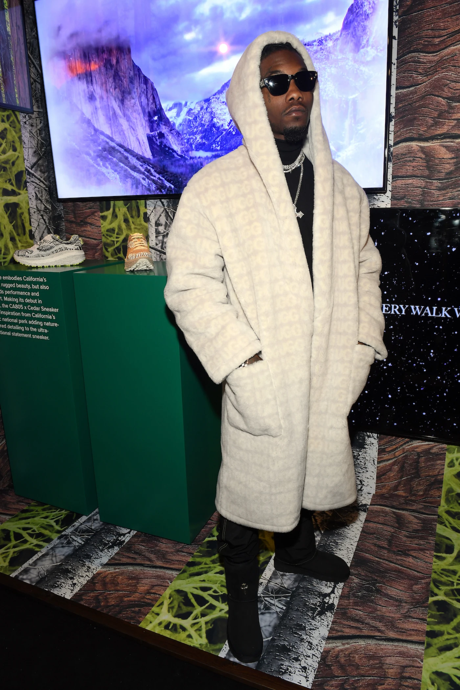
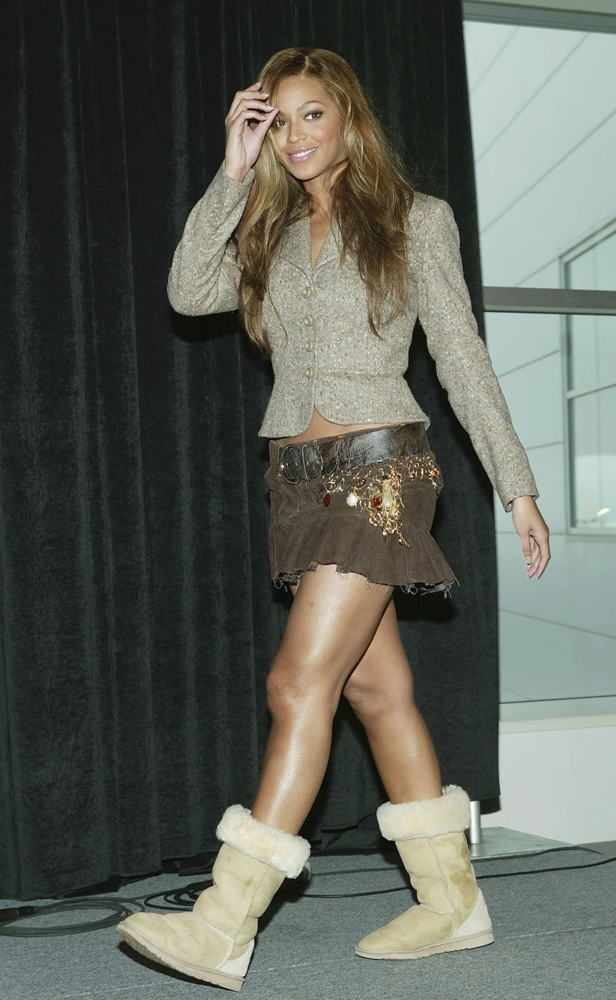
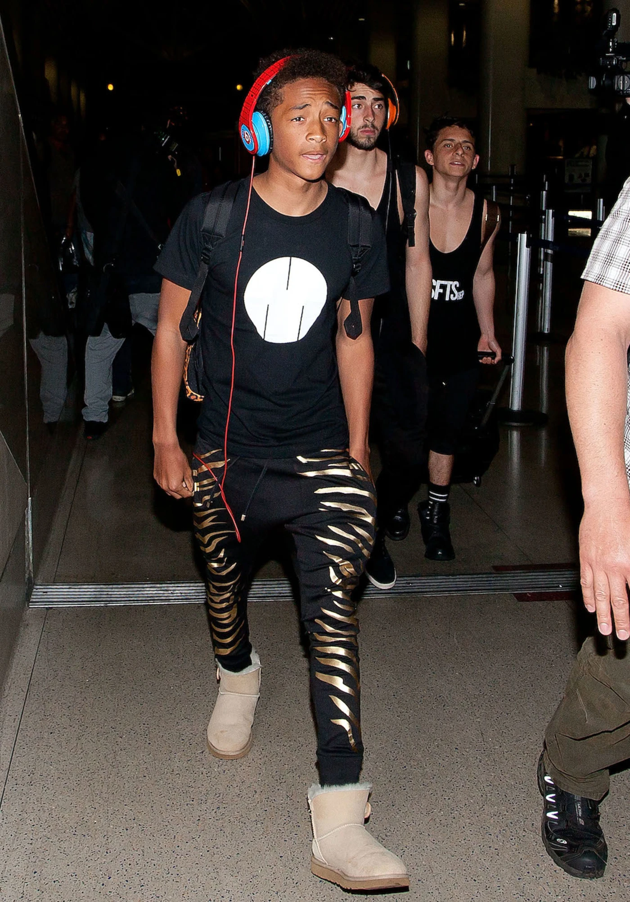
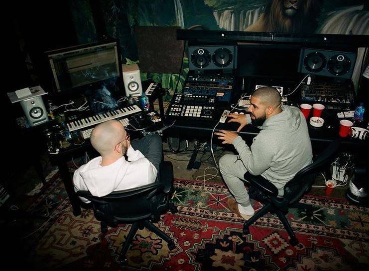

How to Wear Uggs, According to Pharrell Williams, Rihanna, Drake, and More

This winter has been exceptionally cruel, especially since it’s no longer safe to confide in the comfort of other people’s homes during a pandemic. But on the bright side, many of us have picked up some cozy apparel to get through the winter. Although we’ve been wearing sweatsuits year-round, and Crocs during the summer, an unlikely hero returned when temperatures finally dipped. Yes, the classic Ugg boot. The popular company behind these sheepskin lined boots, which originated in Australia, has been producing them since 1978. But even when Ugg boots felt like a relic left in the 2000s, when celebrities and teenagers wore them with yoga pants or Juicy Couture sweatsuits, they’ve managed to make a comeback this winter. The brand released a hyped collaboration with Telfar Clemens in December and Ugg sales at the end of 2020 increased 12.2% to $876.8 million—compared to $781.1 million in the same period last year. Whether you like them or not, the Ugg boot is a certified winter staple worn by everyone from Pharrell Williams to Beyoncé. Here are how some of our favorite celebs have styled themselves in Ugg boots over the years.
Pharrel williams
Pharrell has always been known for rocking pieces no one would dare wear. Whether it’s that 10-gallon Vivienne Westwood hat or a pair of tie-dyed Crocs on the red carpet, Skateboard P does what he wants and he lets it fly. In this photo, we see that Pharrell pulled up to the premiere of The Amazing Spider-Man 2 with a fit that’s low-key better than the movie itself. A heather grey Billionaire Boys Club hoodie, OD beads running down from his neck to his wrist, and some distressed denim jeans perfectly complement the real centerpiece of this fit. Yessir, a classic pair of sheepskin Ugg boots made in collaboration with Junya Watanabe. No surprises there. Pharrell has always been a fan of Watanabe’s work and has worn other garments by the designer such as his patchwork jeans in the past.
Lil Yachty

As many of us know, Lil Yachty is a footwear connoisseur and isn’t afraid to wear some weird sneakers. In his recent appearance on Complex Closets, he could be seen pulling out some archival Nike sneakers that most of us have never even seen. One of those shoes was the Nike Air Chukka Moc Ultra, which closely resembles classic Ugg boots. Coincidentally, Lil Yachty ended up starring in a campaign for the Australian brand’s collaboration with Jeremy Scott in 2017. “It was dope because I had never seen Ugg do anything like it. They do different colors and stuff but the flames, that was dope,” Yachty told Dazed when asked about the collaboration. Yachty modeled both pairs of Scott’s Uggs, which included a flame print and another pair with an embroidery that reads “Ugg Life.”
Lil Wayne
One of Ugg boots’ biggest and earliest adopters was Lil Wayne. Lil Wayne has been caught sitting courtside in a tall white pair of Uggs, a red tiger-striped pair, and even ones outfitted with fur like the Abominable Snowman. Of course, Lil Tunechi has had a long history with Bathing Ape, too. When these two brands came together for a collaboration in 2019, Weezy had to be the one to star in their ad campaign. “I was one of them who’d set out in them when they were saying it was only for girls,” Wayne told Complex about his love for Ugg. “I’d step out in them and kick your day in your face with ’em.” The Bape x Ugg collaboration included three different shearling-lined shoes, mittens, and a $3,500 mouton coat.
Offset
If one member of the Migos took away anything from the music video shoot for “T-shirt,” it was falling in love with cozy winter boots. Who knows exactly how Offset started wearing Ugg boots? It’s likely that Offset’s love of Uggs could be directly traced to his relationship with Cardi B, who is a hardcore lover of the shearling-lined boots herself. Throwback to when Cardi dropped 100 “okurrs” after being gifted a custom pair of Swisher Sweets Uggs. Whatever the case may be, when Offset pulled up with Cardi B to this Ugg event in Paris, he came prepared with this monogrammed fur Ugg jacket and a pair of classic black Ugg boots.
Rihanna
Rihanna has proven time and time again that she will never shelf her Ugg boots. In this photo from 2016, she’s seen walking out of LAX with a black pair that goes well with her Bathing Ape x Puma jacket. To be absolutely honest, it seems that Uggs are RiRi’s go-to footwear when she’s up in the air, as she’s frequently been sighted leaving airports with Ugg boots on. But Rihanna really proved to us in 2018 that she truly loves Uggs when she came to Coachella with one of the craziest Ugg boot fits we’ve ever seen. Rihanna didn’t pull up to the California desert in summer festival apparel, but in thigh-high Ugg boots by Y/Project. “The thing was not to make a nice, cute, easy collaboration. It was really to make a statement. Ugg is a very honest shoe, and it is a shoe where the form follows the concept,” Y/Project’s creative director Glenn Martens told Vogue. “It is to be comfortable, to be warm.”
Beyoncé
One of the boot’s biggest fans from Day 1 was Beyoncé, who wore the boots before performing her version of “The Star-Spangled Banner” for Super Bowl XXXVIII in her hometown of Houston. Although Beyoncé has moved on to wearing boots by brands like Vetements and Gucci, she has always reserved a spot in her closet for Uggs.
Jaden Smith
Jaden Smith clearly took some notes from Lil Wayne when he came up with this crazy fit right here. But as everyone remembers, Ugg boots were usually worn with a pair of tight leggings. Instead of leggings, Smith chose to rock a pair of skinny, black and gold, tiger-striped joggers to complete his Ugg boot fit. Smith is another avid supporter of Ugg and was unafraid to reveal that he was “flossin” with a pair of the brand’s loafers on Instagram back in 2015.
Jadakiss
Jadakiss might be one of the last celebrities in the world you could imagine rocking a pair of Ugg boots. But alas, here’s this picture of him looking hella tough in a pair of all-black Butte Ugg boots. Compared to the soft and pliable appeal of classic Uggs, Butte Uggs are also lined with sheepskin but were designed to protect the wearer from water, rain, and snow. According to the brand, they can withstand weather as low as -20°C. New York is unforgiving in the winter, so it’s no surprise that Kiss added this to his arsenal of winter footwear. If you still can’t believe that Jadakiss loves Uggs, just listen to his song “I Think She Likes Me” where he spits: “Lights off, lights on, Uggs with the tights on.”
Zendaya
Zendaya knew that the best way to style Uggs was to keep it simple. A plain white T-shirt and some beige sweatpants complement the colors of her Ugg slippers well. Unlike other celebs on this list, Zendaya really proved to us that Uggs can be worn in the summer with the right fit.
Drake
How does Drake stay cozy in the studio with Noah “40” Shebib? By wearing a pair of good old Ugg slippers. This was taken around the time Drake was recording Views, which makes perfect sense since Drake was wearing an awful lot of shearling and fur during that era.